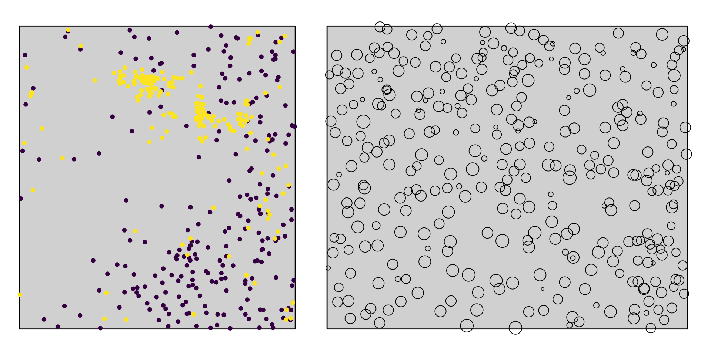

For more information, please see SpatStat06_Homo.pptx, Slides 9 - 28
Perform a point-pattern analysis on the Hemlock_Adults_vs_SmallSaps.dat data set using CSR as null model. We are now especially interested in pattern 2, the small saplings. Using a cell size of 1 meter, calculate the \(O_{22}(r)\). Up to which scale do we find significant clustering of the saplings?
Programita is a little quirky when it comes to use a cluster null model on the second pattern. Therefore, uncheck ‘Change patterns’, choose ‘Cluster Process’, check ‘Change pattern’ again and in the new window choose ‘Univar. cluster’ and click ok.
Choose ‘optimize -> g-function’ (since we are only interested into the O-ring statistic here) and press fit. Programita now tries to estimate optimal values for \(\sigma\) and \(\rho\). The success can be assessed by looking at the upper left plot, where the red line should match the black one. You might obtain a better fit if you click ‘Zoom’ and fit a few times until the fitted parameters stop changing. Once you are satisfied with the fit, press ok and run ‘Calculate index’.
If the \(O_{11}(r)\) function falls into the new envelope, you fitted good parameters for the cluster process. You can review them by clicking ‘Parameter’. Here, the typical cluster size and number of parents are given.
Looking at the pattern of adult trees and saplings, is the fitted value for the number of parents realistic? If not so, what could be the reason?
For more information, please see SpatStat06_Homo_NullModels_Marked.pptx, Slides 35 – 49
The data set Alive_DouglasFir_OGN.dat contains the location and stem diameters (diameter at breast height, DBH) for all live Douglas fir trees in the Old-growth North plot.
Choose ‘Mark correlation function’ and check ‘List with coordinates, no grid’ and set the bin width to 0.5 (giving you a ring width of 1 meter). Also check the ‘Edge correction’ box to avoid edge effects. ‘Click Calculate index’. What do these results suggest?
Check Calculate ‘simulation envelopes’ to test for significance. As a null model use ‘Marks pat 1 and 2 random’, which is the only appropriate model here, because we look only at one type of points. What could be a possible ecological explanation of your results?
For more information, please see SpatStat07_Hetero.pptx.
In the data set Hemlock_Adults_vs_SmallSaps.dat, you can observe a clear gradient in the density of adult trees. Calculate \(O_{11}(r)\) and \(L_{11}(r)\) for pattern 1 (adult trees) to see up to which scale clustering of the trees can be observed using CSR as null model.
Getzin et al. (2008) show that the study area is heterogenous. We are going to account for this heterogeneity by fitting a heterogeneous Poisson processes. Check the ‘Heterogeneous Poisson box’ and click OK in the opening window. Press ‘Calculate index’. Programita will now estimate \(\lambda(x,y)\) and show you a map of the results. The gradient should be well visible.
Press OK in the message box and observe how Programita generates Poisson-processes that follow the estimated density map. Does \(O_{11}(r)\) now fit into the simulation envelope? How do you interpret the result?

Getzin, S., Wiegand, T., Wiegand, K., He, F., 2008. Heterogeneity influences spatial patterns and demographics in forest stands. J. Ecol. 96, 807–820